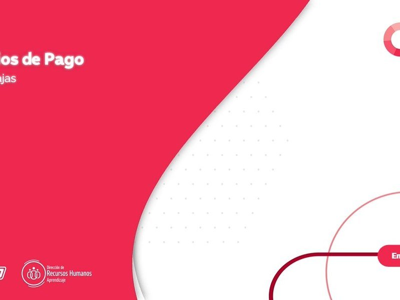

01 · Trabajo seleccionado
Cuatro proyectos que cuentan
cómo trabajo.
Casos reales de e-learning corporativo y producción audiovisual, con foco en el proceso y los resultados.
Siete años transformando
el e-learning de una
compañía.
Antes
Proceso


Ahora

Años
+0
Áreas integradas
0+
Cursos producidos
0+
Personas alcanzadas
0
De junior a responsable del área. Cuando llegué a COTO no había sistema: cada curso era una pieza aparte, sin identidad visual, sin estrategia. Hoy hay una plataforma Moodle institucional, un método replicable y una arquitectura que alcanza a casi veinte mil colaboradores.
Ver caso completo

¿Cómo hacemos un curso desde cero?
El método de cuatro etapas en un caso completo: diseño instruccional, sistema visual, video filmado en planta y evaluación final.
Ver caso

Productora cinéfila
Sitio editorial + canal de YouTube + Instagram. Críticas, festivales y producción audiovisual propia.
Ver caso
Caso 05
Este portfolio
es el caso.
es el caso.
49 versiones · 1 conversación

Aprender a crear
con IA.
El antes era un mensaje de texto. El después es este portfolio. El proceso de construirlo es la demostración.
Ver caso